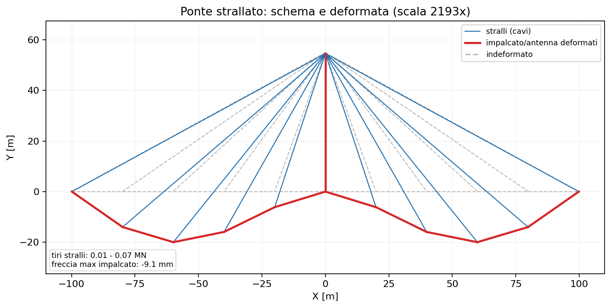
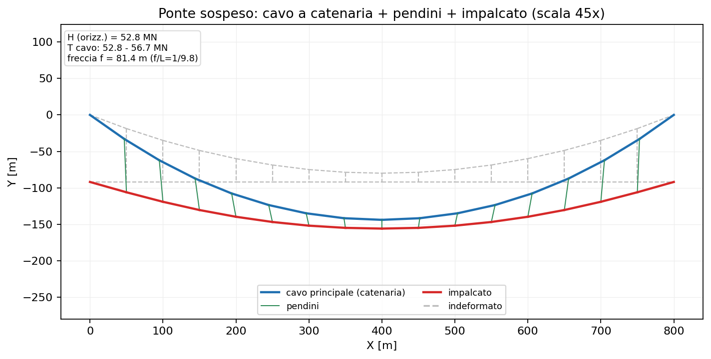

33 - Cavi: ponti strallati e sospesi
beamfeapy include elementi cavo a sola trazione e grandi spostamenti, adatti
a modellare stralli (ponti strallati) e cavi di sospensione (ponti
sospesi). I cavi rendono il problema non lineare (la rigidezza dipende dal
tiro e dalla configurazione) e si risolvono con solve_nonlinear
(Newton-Raphson).
1. Due elementi cavo
| Elemento | Classe | Uso tipico |
|---|---|---|
| Asta corotazionale | CableElement (add_cable) |
stralli, pendini; cavo discretizzato in più segmenti |
| Catenaria elastica esatta | CatenaryCableElement (add_catenary_cable) |
cavo principale di sospensione, peso proprio esatto con un solo elemento per pannello |
add_cable— barra a sola trazione con rigidezza materiale $EA/L_0$ e rigidezza geometrica "di corda" $N/L$ (rigidità trasversale proporzionale al tiro). Se il cavo va in compressione il tiro è posto a zero (sola trazione). Opzionalmente usa il modulo di Ernst per gli stralli inclinati.add_catenary_cable— catenaria elastica di Irvine: porta la propria freccia da peso proprio ($w>0$) senza discretizzazione; un elemento per pannello rappresenta esattamente il cavo sospeso.
La pretensione si imposta con
N0(tiro iniziale, da cui si ricava la lunghezza indeformata $L_0$) oppure direttamente conL0.
Matrice di rigidezza tangente (forma simbolica)
Il cavo agisce solo sulle 3 traslazioni per nodo: la matrice è $6\times6$ sui GdL $[u_x^i, u_y^i, u_z^i,\ u_x^j, u_y^j, u_z^j]$. È non lineare → si scrive la rigidezza tangente nella configurazione corrente. Detti $L_0$ la lunghezza indeformata, $L$ quella corrente, $\mathbf{d}$ il versore corrente da $i$ a $j$, $\varepsilon = (L-L_0)/L_0$ la deformazione e $N = E_{\text{eff}} A\,\varepsilon$ il tiro ($>0$ trazione):
$$ \mathbf{g} = N \begin{bmatrix} -\mathbf{d} \ \mathbf{d} \end{bmatrix}, \qquad \mathbf{K}t = \begin{bmatrix} \mathbf{k} & -\mathbf{k} \ -\mathbf{k} & \mathbf{k} \end{bmatrix}, \qquad \mathbf{k} = \underbrace{\frac{E}} A}{L_0}\,\mathbf{d}\,\mathbf{d}^{\mathsf T}{\text{materiale (assiale)}} + \underbrace{\frac{N}{L}\big(\mathbf{I}_3 - \mathbf{d}\,\mathbf{d}^{\mathsf T}\big)} $$}
Esplicitando $\mathbf{d} = [d_x, d_y, d_z]^{\mathsf T}$, il blocco $3\times3$ $\mathbf{k}$ vale:
$$ \mathbf{k} = \frac{E_{\text{eff}} A}{L_0} \begin{bmatrix} d_x^2 & d_x d_y & d_x d_z \ d_x d_y & d_y^2 & d_y d_z \ d_x d_z & d_y d_z & d_z^2 \end{bmatrix} + \frac{N}{L} \begin{bmatrix} 1-d_x^2 & -d_x d_y & -d_x d_z \ -d_x d_y & 1-d_y^2 & -d_y d_z \ -d_x d_z & -d_y d_z & 1-d_z^2 \end{bmatrix} $$
- il termine materiale $\frac{E_{\text{eff}}A}{L_0}\mathbf{d}\mathbf{d}^{\mathsf T}$ dà rigidezza solo lungo l'asse del cavo $\mathbf{d}$;
- il termine geometrico $\frac{N}{L}(\mathbf{I}_3 - \mathbf{d}\mathbf{d}^{\mathsf T})$ proietta sul piano trasversale a $\mathbf{d}$ e cresce con il tiro $N$ (effetto "corda tesa"): un cavo scarico ($N=0$) non ha rigidezza laterale ed è instabile.
Per la sola trazione, se $\varepsilon < 0$ (cavo lasco) si pone $N=0$ con una rigidezza materiale residua minima per evitare la singolarità.
Il cavo a catenaria (
CatenaryCableElement) ha la stessa struttura $6\times6$ ma le forze interne discendono dalle equazioni di compatibilità della catenaria elastica (Irvine, 1981) e la tangente è calcolata per differenze finite (poi simmetrizzata), non in forma chiusa.
2. Modulo equivalente di Ernst
Uno strallo inclinato modellato con un solo elemento ha una rigidezza
assiale apparente ridotta dalla freccia del peso proprio. beamfeapy usa il
modulo di Ernst (ernst=True):
$$ E_{\text{eff}} = \dfrac{E}{1 + \dfrac{w^2\,A\,L_h^2\,E}{12\,N^3}} $$
con $w$ peso per unità di lunghezza, $L_h$ proiezione orizzontale, $N$ tiro. Per uno strallo lungo ($L_h = 250$ m, $T = 3$ MN, $A = 0.01\ \text{m}^2$): $E_{\text{eff}} \approx 158$ GPa, cioè una riduzione del ~19 % rispetto a $E = 195$ GPa.
3. Esempio: ponte strallato
Antenna centrale, impalcato continuo e stralli a ventaglio (fan) dalla sommità ai nodi dell'impalcato; gli stralli usano il modulo di Ernst.

Validazioni (script
scripts/generate_cable_bridges_figures.py,
e l'esempio usage_examples/37_ponte_strallato.py):
- singolo strallo: l'equilibrio del nodo dà $T = P/\sin\theta$; il FEM lo riproduce esattamente (errore 0.00 %);
- modulo di Ernst: la riduzione di rigidezza coincide con la formula chiusa;
- equilibrio globale: la somma delle reazioni verticali eguaglia il carico totale (peso impalcato + peso proprio stralli).
import math
from beamfeapy import Material, Model, Section
m = Model()
m.add_node(1, 0.0, 55.0, 0.0) # sommita' antenna
m.add_node(2, 100.0, 0.0, 0.0) # ancoraggio impalcato
theta = math.atan2(55.0, 100.0)
# strallo con modulo di Ernst e pretensione di form-finding
m.add_cable(1, 1, 2, E=195e9, A=0.010, N0=1.5e5 / math.sin(theta),
w=78.5e3 * 0.010, ernst=True)
# ... travi di impalcato/antenna, vincoli, carichi ...
r = m.solve_nonlinear(max_iter=200)
T = r.cable_force(1) # tiro dello strallo [N]
4. Esempio: ponte sospeso
Cavo principale a catenaria elastica (un elemento per pannello, peso proprio esatto) + pendini verticali (cavi a sola trazione) + impalcato (trave di irrigidimento).

Validazione (teoria classica del cavo parabolico): per carico verticale uniforme la componente orizzontale del tiro vale $H = w\,L^2/(8f)$. Con $L = 800$ m e freccia $f \approx 81$ m ($f/L \approx 1/9.8$):
| Grandezza | FEM | Teoria $wL^2/8f$ | Scarto |
|---|---|---|---|
| $H$ (orizzontale) | 52.8 MN | 52.6 MN | 0.3 % |
Il tiro nel cavo principale varia da ~52.8 MN (mezzeria) a ~56.7 MN (sommità delle torri), dove $T_{\max} = \sqrt{H^2 + V^2}$.
from beamfeapy import Material, Model, Section
m = Model()
# cavo principale: un elemento a CATENARIA per pannello (peso proprio esatto)
m.add_catenary_cable(1, n_a, n_b, E=200e9, A=0.30, w=78.5e3 * 0.30)
# pendini: cavi verticali a sola trazione dal cavo all'impalcato
m.add_cable(10, n_cable, n_deck, E=200e9, A=0.012, N0=1.5e6)
# ... impalcato (travi), vincoli, carichi ...
r = m.solve_nonlinear(max_iter=400)
H = r.cable_horizontal(1) # componente orizzontale del tiro [N]
Tmax = r.cable_force(1) # tiro massimo del pannello [N]
5. API rapida
| Metodo | Descrizione |
|---|---|
Model.add_cable(id, ni, nj, E, A, N0=…, L0=…, w=…, ernst=…) |
cavo-asta a sola trazione (stralli, pendini) |
Model.add_catenary_cable(id, ni, nj, E, A, w, N0=…, L0=…) |
cavo a catenaria elastica (peso proprio esatto) |
Model.solve_nonlinear(cases=…, max_iter=…) |
soluzione non lineare (Newton-Raphson) |
Result.cable_force(id) |
tiro assiale del cavo [N] (>0 trazione) |
Result.cable_horizontal(id) |
componente orizzontale $H$ (catenaria) [N] |
Riferimenti: H.J. Ernst, Der Bauingenieur 40 (1965); H.M. Irvine, Cable Structures, MIT Press, 1981; N.J. Gimsing & C.T. Georgakis, Cable Supported Bridges, Wiley, 2012.